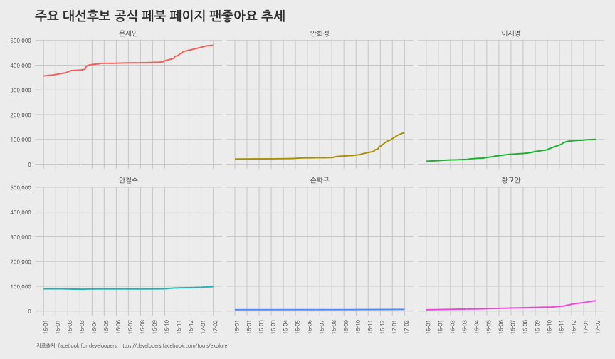
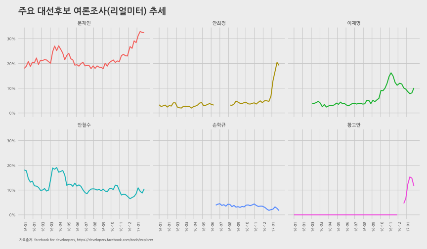

데이터 과학자와 함께 하는 제19대 대통령 선거
페이스북과 여론조사
민심, 페북(SNS), 여론조사, 투표, 당선
민심이 SNS(페이스북 등)와 여론조사 지지율에 반영되고 그리고 종국에는 투표로 이어지게 된다.
“Public sentiment is everything. With public sentiment, nothing can fail; without it nothing can succeed. Abraham Lincoln - first Lincoln-Douglas Debate at Ottawa, Illinois (21 August 1858)”
링컨 대통령이 말씀하신 것과 같이 민심을 읽게 되면 대권을 얻게 되는데, 과거 여론조사는 민심을 읽어내는 한 방식이었다. 이제 민심을 읽을 수 있는 대안이 생겼다. SNS가 그것이고, 페이스북 좋아요가 민심을 표현한다. 따라서, 페이스북 좋아요를 읽게 되면 대권을 얻게 되는 대안이 생기게 되었고, 중간 여론조사기관이라는 중간관리자/업체를 들어내고 직접민주주의에 더 다가서게 되었다. 물론 페이스북 같은 또다른 형태의 중간관리자/업체가 생긴 것으로 볼 수도 있겠으나 생긴지도 얼마되지 않았고, 특히 대한민국에서는 새로운 형태의 선거형태로 혜성처럼 등장했다.

페이스북 페이지 좋아요와 여론조사
페이스북 좋아요와 여론조사 지지율을 관계를 살펴보기 위해서 주요 대선 후보 여론조사 지지율과 각 후보 공식 페이스북 페이지 좋아요 추세를 시각화해서 살펴본다.
환경설정
# 0. 환경설정 ---------------------------------------------------------------
library(RCurl)
library(RJSONIO)
library(tidyverse)
library(tibble)
library(stringr)
library(lubridate)
library(plyr)
library(ggthemes)
library(extrafont)
library(rvest)
loadfonts()데이터 가져오기
페이스북 각 후보 페이지에서 일자별 팬 좋아요 데이터를 가져오고, 여론조사 데이터는 나무위키 리얼미터 주별 여론조사 데이터를 긁어와서 활용한다.
# 1. 데이터 가져오기 ---------------------------------------------------------------
## 1.1. 페북 좋아요 --------------------------------------
fb_page_fan_likes <- read_csv("data/fb_page_fan_likes.csv")
## 1.2. 나무위키 지지율 데이터---------------------------------
url <- "https://namu.wiki/w/%EC%A0%9C19%EB%8C%80%20%EB%8C%80%ED%86%B5%EB%A0%B9%20%EC%84%A0%EA%B1%B0/%EC%97%AC%EB%A1%A0%EC%A1%B0%EC%82%AC"
Sys.setlocale("LC_ALL", "C")
survey_2016 <- read_html(url, encoding="utf-8") %>%
html_nodes("table") %>%
.[5] %>%
html_table(fill=TRUE)
survey_2017 <- read_html(url, encoding="utf-8") %>%
html_nodes("table") %>%
.[7] %>%
html_table(fill=TRUE)
### 1.2.1. 데이터프레임 변환----------------------------------------------------
# 2016년 정리
Sys.setlocale("LC_ALL", "Korean")
survey_2016_tbl <- do.call(rbind, lapply(survey_2016, data.frame, stringsAsFactors=FALSE))
names(survey_2016_tbl) <- survey_2016_tbl[1,]
survey_2016_df <- survey_2016_tbl %>% slice(2:53) %>% dplyr::select(`주차`,`문재인`, `이재명`, `안희정`, `안철수`, `유승민`,`손학규`) %>%
mutate(`문재인` = as.numeric(str_replace_all(`문재인`, "%", "")),
`이재명` = as.numeric(str_replace_all(`이재명`, "%", "")),
`안희정` = as.numeric(str_replace_all(`안희정`, "%", "")),
`안철수` = as.numeric(str_replace_all(`안철수`, "%", "")),
`유승민` = as.numeric(str_replace_all(`유승민`, "%", "")),
`손학규` = as.numeric(str_replace_all(`손학규`, "%", "")),
`황교안` = 0) %>%
mutate(wdate = seq(ymd("2016-01-01"), length = 52, by = "1 week")) %>%
dplyr::select(-`주차`)
# survey_2016_df[is.na(survey_2016_df)] <- 0
# 2017년 정리
survey_2017_tbl <- do.call(rbind, lapply(survey_2017, data.frame, stringsAsFactors=FALSE))
names(survey_2017_tbl) <- survey_2017_tbl[1,]
survey_2017_df <- survey_2017_tbl %>% slice(2:9) %>% dplyr::select(`주차`,`문재인`, `이재명`, `안희정`, `안철수`, `유승민`,`손학규`, `황교안`) %>%
mutate(`문재인` = as.numeric(str_replace_all(`문재인`, "%", "")),
`이재명` = as.numeric(str_replace_all(`이재명`, "%", "")),
`안희정` = as.numeric(str_replace_all(`안희정`, "%", "")),
`안철수` = as.numeric(str_replace_all(`안철수`, "%", "")),
`유승민` = as.numeric(str_replace_all(`유승민`, "%", "")),
`손학규` = as.numeric(str_replace_all(`손학규`, "%", "")),
`황교안` = as.numeric(str_replace_all(`황교안`, "%", ""))) %>%
mutate(wdate = seq(ymd("2017-01-01"), length = 8, by = "1 week")) %>%
dplyr::select(-`주차`)
# survey_2017_df[is.na(survey_2017_df)] <- 0
survey_df <- bind_rows(survey_2016_df, survey_2017_df) %>%
dplyr::rename(fdate = wdate) %>% dplyr::select(fdate, 손학규, 문재인, 안철수, 이재명, 황교안, 안희정)
survey_df_lng <- survey_df %>% gather(person, survey, -fdate)
# 2. 데이터 정리 ---------------------------------------------------------------
survey_df_lng <- survey_df_lng %>%
mutate(person = factor(person,
levels=c("문재인","안희정", "이재명", "안철수", "손학규", "황교안")))
# write_csv(survey_df_lng, "output/fb_page_fan_survey.csv")페북 좋아요 vs. 설문조사 시각화
주요 대선후보 페북 좋아요와 설문조사 데이터가 준비되면 ggplot을 통해 각 후보별로 지지율과 페북 좋아요를 시각화한다.
# 3. 시각화 ---------------------------------------------------------------
# 3.1. 페이스북 좋아요 ---------------------------------------------------------------
dlist <- unique(fb_page_fan_likes$fdate)
ggplot(fb_page_fan_likes, aes(x=fdate, y=fan_likes, color=person)) +
geom_line(size=0.9) +
# geom_vline(xintercept=as.numeric(ymd("2008-01-01")), linetype=2) +
scale_x_date(breaks=seq(dlist[1], tail(dlist, n=1) + days(1), "30 day"),
date_labels= "%y-%m", limits=c(dlist[1],tail(dlist, n=1) + days(1))) +
scale_y_continuous(label=scales::comma) +
theme_fivethirtyeight(base_family="NanumGothic") +
theme(legend.position="none",
plot.caption=element_text(hjust=0,size=7),
plot.subtitle=element_text(face="italic"),
axis.text=element_text(size=7.5),
axis.text.x = element_text(angle = 90, hjust = 1))+
labs(x="",y="",title="주요 대선후보 공식 페북 페이지 팬좋아요 추세",
caption="\n 자료출처: facebook for develoopers, https://developers.facebook.com/tools/explorer") +
facet_wrap(~person)
# 3. 시각화 ---------------------------------------------------------------
# 3.2. 설문조사 ---------------------------------------------------------------
dlist <- unique(survey_df_lng$fdate)
ggplot(survey_df_lng, aes(x=fdate, y=survey/100, color=person)) +
geom_line(size=0.9) +
# geom_vline(xintercept=as.numeric(ymd("2008-01-01")), linetype=2) +
scale_x_date(breaks=seq(dlist[1], tail(dlist, n=1), "30 day"),
date_labels= "%y-%m", limits=c(dlist[1],tail(dlist, n=1))) +
scale_y_continuous(label=scales::percent) +
theme_fivethirtyeight(base_family="NanumGothic") +
theme(legend.position="none",
plot.caption=element_text(hjust=0,size=7),
plot.subtitle=element_text(face="italic"),
axis.text=element_text(size=7.5),
axis.text.x = element_text(angle = 90, hjust = 1))+
labs(x="",y="",title="주요 대선후보 여론조사(리얼미터) 추세",
caption="\n 자료출처: facebook for develoopers, https://developers.facebook.com/tools/explorer") +
facet_wrap(~person)